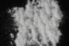

|
|
(For further information on spectroscopy, see:
http://speclab.cr.usgs.gov)
TITLE: Sanidine NMNH103200 Feldspar DESCRIPT
DOCUMENTATION_FORMAT: MINERAL
SAMPLE_ID: NMNH103200
MINERAL_TYPE: Tectosilicate
MINERAL: Sanidine (Feldspar group)
FORMULA: (K,Na)AlSi3O8
FORMULA_HTML: (K,Na)AlSi3O8
COLLECTION_LOCALITY: Higasinuiro-gun, Taiji, Wakayama, Japan
ORIGINAL_DONOR: Smithsonian Institution
CURRENT_SAMPLE_LOCATION: USGS Denver Spectroscopy Laboratory
ULTIMATE_SAMPLE_LOCATION: USGS Denver Spectroscopy Laboratory
SAMPLE_DESCRIPTION:
"Result of petrographic examination: Many small (0.5cm) euhedral crystals totaling 6.49 g. almost all have some adhering clay/limonite, to be removed by brushing or ultrasonic cleaning. Under the microscope, a very, very few acicular inclusions (rutile?) can be seen. Otherwise, very pure."
Salisbury, J. W., Walter, L. W., and Vergo, N., 1987, Mid-Infrared (2.1-25µm) Spectra of Minerals: First Edition, U.S. Geological Survey Open File Report 87-263.
IMAGE_OF_SAMPLE:

END_SAMPLE_DESCRIPTION.
XRD_ANALYSIS:
Sanidine plus a moderate amount of albite.
Salisbury, J. W., Walter, L. W., and Vergo, N., 1987, Mid-Infrared (2.1-25µm) Spectra of Minerals: First Edition, U.S. Geological Survey Open File Report 87-263.
END_XRD_ANALYSIS.
COMPOSITIONAL_ANALYSIS_TYPE: EM(WDS) # XRF, EM(WDS), ICP(Trace), WChem
| COMPOSITION KEYWORD |
Oxide ASCII |
Amount | Weight Percent, % |
Oxide html |
|---|---|---|---|---|
| COMPOSITION: | SiO2 | 67.43 | wt% | SiO2 |
| COMPOSITION: | TiO2 | 0.03 | wt% | TiO2 |
| COMPOSITION: | Al2O3 | 18.65 | wt% | Al2O3 |
| COMPOSITION: | FeO | 0.59 | wt% | FeO |
| COMPOSITION: | MnO | 0.02 | wt% | MnO |
| COMPOSITION: | MgO | 0.03 | wt% | MgO |
| COMPOSITION: | CaO | 0.02 | wt% | CaO |
| COMPOSITION: | Na2O | 5.38 | wt% | Na2O |
| COMPOSITION: | K2O | 7.38 | wt% | K2O |
| COMPOSITION: | Total | 99.97 | wt% |
COMPOSITION_TRACE:
COMPOSITION_DISCUSSION:
"Microprobe analysis shows homogeneity within and between grains. This is typical sanidine with about as much soda as potash, but the albite present is cryptoperthic. Average of 10 analyses."
Salisbury, J. W., Walter, L. W., and Vergo, N., 1987, Mid-Infrared (2.1-25µm) Spectra of Minerals: First Edition, U.S. Geological Survey Open File Report 87-263.
END_COMPOSITION_DISCUSSION.
MICROSCOPIC_EXAMINATION:
END_MICROSCOPIC_EXAMINATION.
SPECTROSCOPIC_DISCUSSION:
END_SPECTROSCOPIC_DISCUSSION.
SPECTRAL_PURITY: 1b2b3b4_ # 1= 0.2-3, 2= 1.5-6, 3= 6-25, 4= 20-150 microns
| LIB_SPECTRA_HED: | where | Wave Range | Av_Rs_Pwr | Comment |
|---|---|---|---|---|
| LIB_SPECTRA: | splib04a r 4328 | 0.2-3.0µm | 200 | g.s.= |
| LIB_SPECTRA: | splib05a r 6064 | 0.2-3.0µm | 200 | g.s.= |
| LIB_SPECTRA: | splib06a r 19920 | g.s.= | ||
| LIB_SPECTRA: | splib06a r 19933 | g.s.= |
{kind=link}